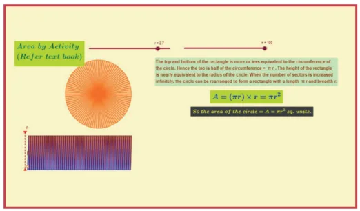
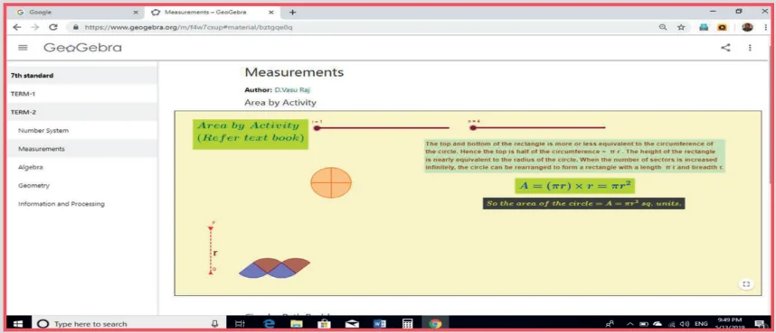
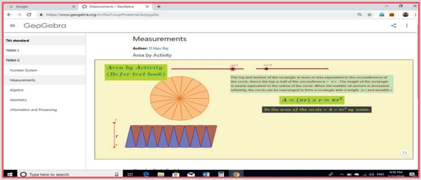

Step-1 :
Open the Browser type the URL Link given below (or) Scan the QR Code. GeoGebra work sheet named "Mensuration" will open. There are two activities named "Area by Activity" and "Circular path problem"
Step-2 :
In the first activity move the slider n (No. of divisions) and the slider r (to increase the radius). As the no. of division increases it becomes almost a rectangle with Length = half the circumference and breadth equal to the radius. Thus the area = Length \(\times\) Breadth \(= \pi r^2\). Also try the second activity.
Expected Result is shown in this picture

Step 1

Step 2

Browse in the link
Measurements: https://www.geogebra.org/m/f4w7csup#material/bztgqe8q
or Scan the QR Code.